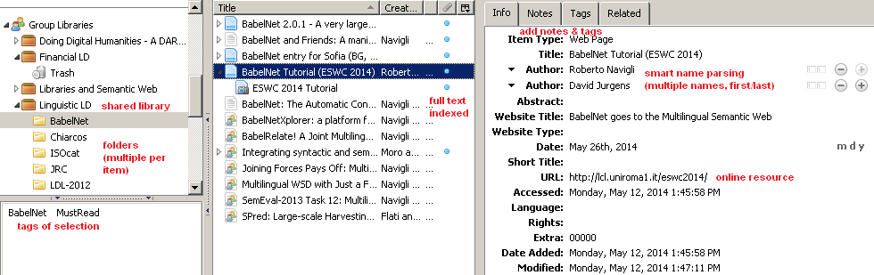
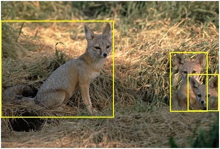

Linguistic Linked Data and Ontologies
Navigating This Presentation
- Ext links shown icon, eg http://www.ontotext.com
- This web-based presentation is made with S5 and plain text
- Press F11 for full-screen now (on small screen or Opera)
- Navigating:
- Click, Right, Down, PageDown: next slide (Opera: only PageDown)
- Left, Up, PageUp: prev slide (Opera: only PageUp)
- Home: first slide
- End: last slide
- nn Enter: go to slide nn
- t: toggle between slide view and single-page HTML view (for printing)
- c (or hover at bottom-right corner): show control panel

- toggle, prev, next icons
- table of contents listbox
Outline
- Zotero Bibliography
- Linguistic Linked Datasets
- WordNet, Lingvo, Lexvo: in FactForge
- WordNet RDF
- Wiktionary
- BabelNet
- UBYlemon
- Linguistic ontologies
- NIF
- OLIA and its constituents
- LEMON
- GOLD, ISOcat (?)
- News ontology
Zotero Bibliography
Collaborative bibliography on Linguistic Linked Data: representing language resources and text annotations as RDF.
- Covers these topics: GOLD, ISOcat, ITS2, LAF, LD4LT, LEMON, LIME, LMF, Multitext, NIF, NLP2RDF, OLIA, OntoLex, OntoLing, OntoTag, etc
- https://www.zotero.org/groups/linguistic_ld: ask to join, so you can collaborate
- https://www.zotero.org/groups/linguistic_ld/items: library on the web

Zotero Collaboration
- Install Zotero and use the desktop version! (I use Zotero Standalone + Chrome)
- Collaborative tags (must add for each resource):
- The topics above; add new topics freely
- HasRead: someone's read it, please add some Notes
- MustRead: likely to be used in Multisensor
- If possible, add abstract, URL, the article itself.

Linguistic Linked Data in FactForge
Datasets already integrated in FactForge:
- WordNet: well-known and prototypical lexical resource
- 117k synsets, glosses, numerous synonyms (words/phrases). Hyponyms/hyperonyms, meronyms, antonyms
- FactForge includes the W3C RDF representation of WordNet 3.1
- Lingvoj, Lexvo: info about languages
 includes sample images (5k per noun synset!). Enables automatic image annotation.
includes sample images (5k per noun synset!). Enables automatic image annotation.
- human-curated bounding boxes, eg "fox" and "airplane"

WordNet RDF
Wiktionary
BabelNet
Useful for Multilingual Joint Word Sense Disambiguation
UBYlemon
Linguistic Ontologies
There's been a flurry of activity in the last 5 years for representing Linguistic data as RDF
- Covers both Lexical resources (eg WordNet) and Corpora (eg MASC)
- Working groups:
- Intro: Christian Chiarcos, John McCrae, Philipp Cimiano, and Christiane Fellbaum. Towards Open Data for Linguistics: Linguistic Linked Data. In New Trends of Research in Ontologies and Lexical Resources. Theory and Applications of Natural Language Processing. Springer Berlin Heidelberg, 2013.
Linguistic LOD

News ontology
rnews (newsML, IPTC)